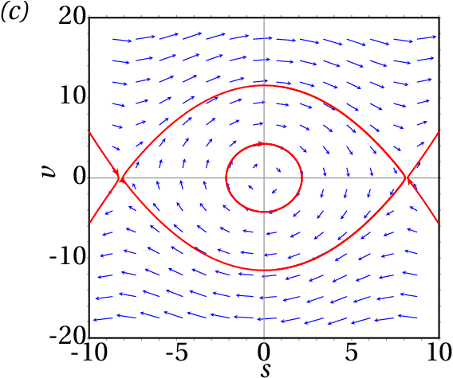
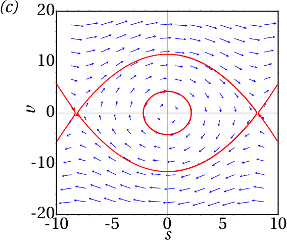

To analyze a dynamical system, it is important to determine the existence of equilibrium points. The acrobats in the photograph are in a stable equilibrium position: if the bicycle tilts laterally, the weight of the acrobat hanging underneath causes the system to tilt in the opposite direction, returning to the equilibrium position. If the acrobat on the bike did not have the second acrobat hanging, that equilibrium position would be unstable: if the bicycle tilted sideways, its weight plus that of the acrobat would make them tilt further, moving the bicycle away from the equilibrium position.
The kinematic equations are ordinary equations differential. An ordinary differential equation —or ODE for short— is any expression that relates a function, for example and its derivatives: , , etc. For example: ; in this case the independent variable is and the dependent variable is , which depends on . Many problems of science and engineering lead to ordinary differential equations that need to be solved to find the dependent variable in terms of the independent variable. There are equations that appear in several different areas; for example, the equation of the simple harmonic oscillator, analyzed in chapter 6, is of the general form , where is a positive constant. In the various scientific areas in which similar equations appear, the behavior of the system can be analyzed by analogy with the movement of a body connected to an elastic spring.
An ODE is of first order if the only derivative that appears in the equation is the first-order derivative. If the independent variable is and the dependent variable , these types of equations can be written in the general form
where is an expression of and . All the differential equations that were solved in chapter 1 by the method of separation of variables are of this type. But there are other first-order equations that can not be solved by this method. For example, the equation can not be separated into a term that depends only on and anotherr that depends only on .
An ODE admits many different solutions, depending on the initial values ( , ). In the examples solved in chapter 1, different solutions were obtained for different integration limits.
A first-order ODE with the general form is called autonomous because the independent variable does not appear explicitly on the right-hand side. In this case, the solution is still a function of time but it turns out that the functions obtained with the initial conditions ( , ), ( , ), ( , ), etc. are the same function but displaced along the axis of . It is then said that the way the system evolves from the initial value is the same regardless of when the system starts to evolve.
In physical terms, an autonomous system is a system that is always governed by the same physical laws. For instance, the height of a body in free fall from a point with height always decreases in the same way, as long as the value of doesn't change.
Consider now the case where there are two independent functions and , which depend on time and are defined by two first-order autonomous differential equations:
For example, the system:
We intend to find the functions and from the known values of and in an initial instant . We can visualize the problem on a graph where and are in two perpendicular axes, as in figure 7.1. Two initial values and , at an initial instant , define a point in that plane and in the following instants the values of and will change, causing that point to move along a curve on that plane.
The plane with the axes and is called phase space and at every instant , the point of phase space defined by the coordinates ( , ) represents the state of the system at that instant. The two variables and are the state variables and the curve represented in figure 7.1, which shows the variation of the state variables from an initial state, is called an evolution curve of the system.
Any point of phase space can be the initial state of the system ( , ). The values of and at that point are well defined and determine how the state variables and change in that point. The expression , derivative of with respect to time, gives the increase of per unit of time. That is, the displacement of the projection of the state of the system in the axis per unit of time; analogously, gives the displacement of the projection of the state of the system in the axis per unit of time.
Therefore, the vector:
Defines the displacement of the state of the system in phase space per unit of time and is thus called phase velocity. The differential equations 7.2 are called evolution equations of the system, and their right-hand sides define the phase velocity at any point in phase space. For example, the expression for the phase velocity of the system with evolution equations 7.3 is:
The initial state ( , ) in the instant moves in the phase space with phase velocity . At a later time , the phase velocity may be another different vector that makes the state move in a different direction and with a different speed. Thus, the evolution of the state of the system as a function of time is defined by a continuous curve in phase space, passing through the initial state ( , ). Through each point of phase space where functions and are defined passes one, and only one, evolution curve of the system.
The phase velocity is tangent to the evolution curves. Two different evolution curves can never crossed each other, because at the point of intersection there would be two different phase velocities, which is not possible.
It is possible to have an idea of how a dynamical system evolves in time, without having to solve the differential equations 7.2. Figure 7.2 shows the direction of the phase velocity at various points in the phase space, for a concrete example. This type of graph is called a direction field.

We can predict how the evolution curve will be from an initial state in an instant 0 by looking at the direction field. For example, figure 7.2 shows one of the possible evolution curves of the system, from the initial state P, with and . It is also possible to see the previous evolution of the system in which led him to reach the state P in . The figure shows that the system passed state O before reaching state P.
Along the evolution curve, decreases from its initial positive value in to negative values, reaching a minimum value; it then increases and becomes positive again. The variable increases from its initial negative value and when is approaching zero, it decreases slightly and increases again while remains negative.
The general form of a second-order autonomous differential equation is:
Which can be reduced to two evolution equations of a dynamical system with two state variables. We just have to consider the first derivative as another variable state variable , which also depends on time; therefore, the second derivative is the same as and the differential equation can be written as , which is a first-order equation. But as this new equation has two state variables, a second equation is needed which is the definition of the new state variable: . Thus, the initial equation is equivalent to the system of two equations:
These two equations define a dynamical system with state variables and . The expression of the phase velocity is:
In mechanical systems, Newton's leads to the expression for the acceleration, called equation of motion. Since the acceleration is the second derivative of the position, the equation of motion is a second-order differential equation. The velocity — first derivative of the position — is the additional state variable that reduces the equation of motion to two first-order differential equations. The state of the system at each instant is given by its the position and velocity.
A 0.5 kg object moves along a curve, under the action of a force with tangential component (in SI units), where is the position along the curve. (a) Write the evolution equations of the system and identify the state variables. (b) Plot the direction field for values of in the interval [-4, 8] and values of in the interval [-30, 30]. (c) At an initial instant the particle is in the position , with speed m/s; plot the evolution curve of the particle in phase space.
Solution. (a) The tangential acceleration is equal to the tangential component of the force, divided by the mass:
This equation of motion is equivalent to the following two equations of evolution of a dynamical system:
The state variables are the position along the trajectory, , and the velocity .
(b) and (c) The phase velocity is the vector:
In Maxima, the direction field can be done with the program plotdf. The first two arguments that should be given to the program are a list with the components of the phase velocity and another list with the names of the state variables. After that, the domain of the state variables can be defined as shown below. To plot the evolution curve that passes through the initial state and , the option trajectory_at is used:
The graph obtained is shown in figure 7.3.

The vectors representing the phase velocity were not drawn to their true length, to prevent them from intersecting, but were adjusted to be slightly smaller than the distance between the grid points on which the vectors are drawn.
The evolution curve of the particle from shows that the particle is moving in the direction in which increases, accelerating to a maximum speed approximately . It then slows down until it stops ( ), at approximately . It then accelerates again, but now in the sense that decreases ( ) to a minimum speed approximately , until it stops again near . At this point the cycle is repeated indefinitely.
The direction field provides a lot of important information about the system. In the example shown in figure 7.3, the initial conditions given lead to an oscillatory movement around . The figure also shows that if the initial velocity were greater, or if the particle started from , the oscillation would be up to values of less than -1.5. It can also be seen that there are other oscillations (closed evolution curves) around .
A more complete graph, showing various evolution curves that help describe the possible types of motion, is called phase portrait of the system.
The direction field is also useful to explain how the numerical methods used to solve differential equations work. Given an initial point in phase space and expressions that define the phase velocity at each point in phase space, a sequence of points is created in which each point follows the previous one in the direction defined by the mean phase velocity between those two points. The optiontrajectory_at of the program plotdf, which was used in the above example, causes the system of differential equations to be solved numerically with initial conditions equal to the values given and the solution is represented in the same graph of the direction field.
As already mentioned, the first argument to be given to the program plotdf must be a list with the expressions that define the two components of the phase velocity, that is, the derivatives of the two state variables. Each of these expressions may depend solely on the two state variables. Following this list there must be another list with the names of the two state variables, in the same order that was used to write their derivatives in the first list. There are several additional options that can be used; the complete list can be found in the chapter on numerical methods in the Maxima manual.
The program plotdf opens a new window with the direction field, as shown in figure 7.4. When the mouse is moved over phase space, the coordinates of the pointer point appear in the lower right corner. By clicking on the first mouse button on a point in the graph, the evolution curve that passes through this point appears with an arrow indicating the direction of evolution.
The menu bar of the graphics window includes several buttons. The buttons with the + and − signs are used to increase or decrease the size of the graph. The button with a disk is used to save the graph to a Postscript file. The button on the right, with a small graph, opens a new window showing the plots of the two state variables in terms of time, corresponding to the last evolution curve that has been drawn.
The button with a screwdriver opens the "Plot SetUp" menu (figure 7.4) which shows several parameters that can be changed: the equations defining the phase velocity components, the colors used for the phase velocity vectors (vectors) and the evolution curves (fieldlines), the domain, etc.
If the vectors field is left blank, the direction field vectors are not plotted and if the fieldfieldlines is blank, no evolution curves are drawn. When a parameter is changed, one must select "ok" and then "Replot" (button with rotating arrows) to update the graph.
The field called direction has, by default, the value both, which means that when one clicks on a point, the evolution curve through that point will be plotted, extending for some interval of time after that point and some interval of time before it. Changing this field to forward or backward, the curve will shown only for some time interval after or before the initial instant. Entering two coordinates in the field called Trajectory at, separated by space, and pressing the Enter key, another evolution curve will be shown, passing through the point with those coordinates.
At each point in phase space, the phase velocity indicates the direction of the tangent to the evolution curve that goes through this point. At points where the phase velocity is zero, there is no curve passing through them. In those cases the state of the particle remains constant. Those points are called equilibrium points.
Find the equilibrium points of the dynamical system
Solution. To solve the problem using Maxima, it is convenient to create a list with the two expressions on the right-hand sides of the evolution equations
Then command solve is then used to find the equilibrium points, where the two expressions are equal to zero
The curve where vanishes is called nullcline for the variable and in this case it is the ellipse . The nullclines for are the two parts of the hyperbola .
The equilibrium points of the system are the four points of intersection between the nullclines of and . The plots of these two curves can be obtained from Maxima using the program that plots implicit functions:

The result is shown in figure 7.5. Inside the ellipse, is positive, so the phase velocity points to the right. Outside the ellipse the phase velocity points to the left. In the region to the left of the hyperbola, the phase velocity points downward, between the two branches of the hyperbola it points upward and to the right of the hyperbola it points downward.
In mechanical systems where the two state variables are the position along the trajectory and the velocity , if the two components of the phase velocity are zero then the velocity and the tangential acceleration are zero. This implies that the system is in a state of static equilibrium, in which the object remains at rest. In those systems, all points on the axis in phase space correspond to states of rest ( ), but not necessarily equilibrium states ( ). The equilibrium states of those dynamical systems are the static equilibrium points, which are all on the axis, where , and in with also equal to zero.
At the points of the axis where the phase velocity is not zero, the system becomes at rest just for an instant, resuming its motion immediately.
A kinetic equilibrium state is a state in which the tangential acceleration is zero but the object moves with constant velocity. In the phase portrait those kinetic equilibrium states are straight lines parallel to the axis.
An object with mass 0.3 kg moves under the action of a force with tangential component (SI units):
where is the position along the trajectory. (a) Find the equilibrium points of the system. (b) Plot the phase portrait of the system.
Resolution. (a) One can start by saving the expression of the force in terms of :
To find the equilibrium points, where the tangential force is zero, we can use the command realroots, since we are only interested in the real roots
There are then 4 equilibrium points, all with And with the 4 values of shown in (%o8). (b) In order to plot the phase portrait we chose a domain in which the four equilibrium points are visible and distinguishable:
The result is shown in figure 7.6.

The evolution curves in the vicinity of the 2 equilibrium points in and are closed, with the equilibrium point inside them. At the other two equilibrium points, and , there are evolution curves that begin or end at the point (they approach asymptotically to the point in the limits or ). These types of curves will be analyzed in more detail in the next two sections.
The equilibrium points in and in example 7.3 are stable equilibrium points, because if the initial state of the system is close to one of those points, the system will return to that initial state.
The other two equilibrium points, at and , are unstable equilibrium points, because if the initial state of the system is close to one of those points, the system will move farther away from the equilibrium point.
The components of the phase velocity allows us to find the equilibrium points. In the case of mechanical systems, with state variables and , it is enough to find the roots of the expression for tangential force (or tangential acceleration), with respect to the position , substituting . In those systems the expression for or , with , can also be used to classify the equilibrium points as stable or unstable. Figure 7.7 shows the plot of the tangential force in example 7.3.

The equilibrium points are the points in figure 7.7 where the curve crosses the axis. If at those points crosses from a negative value to a positive value, on the left of the point, where , the force points to the left making decrease, that is, making the system move away from the equilibrium point. On the right of the point, where , the force is to the right, making increase, so the system also moves away from equilibrium point. Thus, at those points the equilibrium is unstable.
At the equilibrium points where changes sign from positive to negative, the force makes increase if , or decrease if . Therefore, those are stable equilibrium points.
In chapters 9 and 10 a more general method to analyze the stability of the equilibrium points will be introduced. The phase portrait also helps to analyze the stability of the equilibrium points.
In example 7.3 (figure 7.8) the evolution curves in the vicinity of the stable equilibrium points, and , are closed curves around the equilibrium point. Each of those closed curves, called cycles, imply oscillatory motion around the equilibrium point.
A cycle is a closed curve in phase space that corresponds to a periodic oscillation of the state variables.

Figure 7.8 shows the important parts in the phase portrait of the example in figure 7.6. At the unstable equilibrium point there are two evolution curves that approach asymptotically that point at both limits and ; one on the left and one on the right. Neither of those two curves is really a closed curve because the equilibrium point itself is not part of any of those curves. Each of those two curves is called a homoclinic orbit and they correspond to a soliton: a non-periodic oscillation, in which each state variable increases (or decreases) away from the equilibrium value, but decreases again (or increases) approaching the equilibrium value again in the limit of the .
A homoclinic orbit is a curve in phase space that begins at a point of equilibrium and ends at the same point and corresponds to a soliton —non-periodic oscillation— of the system.
In the phase portrait 7.8 there is also a third homoclinic orbit, which starts from the unstable equilibrium point , passing the two stable equilibrium points and , and then going back to the point . In that example, the homoclinic orbits are the boundaries of the stability regions: the two darker regions in figure 7.8 are the regions where the system oscillates around the stable equilibrium points. In region with a lighter color, the system oscillates around the two stable equilibrium points.
Cycles always appear around stable equilibrium points and homoclinic orbits always start and end at points of unstable equilibrium. An equilibrium point where a homoclinic orbit exists is necessarily an unstable equilibrium point because in one direction the state of the system moves away from the point, but in another direction the state approaches the point.
Note that in cycles the system passes repeatedly through the same points in phase space, whereas in homoclinic orbits the system never passes twice through the same point in phase space.
The plot of the position and velocity versus time (figures 7.9 and 7.10 ) can be obtained using the option versus_t of the program plotdf or with a menu button.

The plot of the state variables with respect to time in the case of the cycle, shown in figure 7.9, shows the periodic oscillation of the variables. The combination of these two variables in phase space produces an ellipse around the point (0.8102, 0) in the phase portrait 7.8. Figure 7.10 shows the non-periodic oscillation of the state variables with respect to time for the homoclinic orbit that approaches the equilibrium point (-2.652,0) in the phase portrait 7.8.
There are also heteroclinic orbits in some dynamical systems. The phase portrait 7.11 shows an example. In the triangle near the center of the portrait, the three vertices are unstable equilibrium points. The three sides of the triangle are three different evolution curves, which have no points in common because the three vertices are not part of any of those 3 segments. Each segment starts from an equilibrium point and ends at the next point, completing a cyclic sequence of points and curves, with equal number of points and curves connecting them.
A heteroclinic orbit is formed by a sequence of evolution curves and equilibrium points. The first curve starts at the first point and ends at the second point, the second curve starts at the second point and ends at the third point, and so on until the last curve that ends at the first point.

In some dynamical systems it is possible to find a function of the state variables which defines all the evolution curves in phase space. Each possible evolution curve is defined by the equation
With different values of the constant . The function is called Hamiltonian of the system and the systems in which it is possible to find such function are called conservative or Hamiltonian systems.
Since the state variables are functions of time , any function of the state variables is a function that depends only on time. In the case of equation 7.8 implies that along any evolution curve; namely, the value of the function remains constant as the system evolves. To compute the derivative we use the chain rule for composite functions:
Substituting the evolution equations 7.2, we obtain
One way to ensure that the result is null, for any values of the state variables, is choosing a Hamiltonian that satisfies the following conditions:
And it then follows that
We then conclude that any dynamical system , is conservative if, and only if, its divergence is zero:
When the dynamical system is equivalent to a second-order differential equation , the evolution equations 7.6 make the previous condition simpler:
That is, the system is conservative if the function does not depend on (that is equivalent to saying that the expression of the second derivative depends only on and not on ).
In the case of mechanical systems, with evolution equations obtained from Newton's law , the necessary and sufficient condition for the system to be conservative is that the tangential force does not depend on the velocity . In that case, the Hamiltonian is defined by the following conditions:
Leading to the function,
which is the mechanical energy —kinetic plus potential— per unit mass:
The two systems considered in examples 7.1 and 7.3 are both conservative. In example 7.3, the potential energy along the trajectory is
And the Hamiltonian of the system is then
The evolution curves of the system are all the level curves of the Hamiltonian , on the phase plane . Maxima's program ploteq can be used to plot level curves. Its syntax is similar to that of plotdf, but the first argument must be the expression of the Hamiltonian , instead of the list of components of the phase velocity:
Figure 7.12 shows the result, after plotting some curves by clicking on some points.

The plot is similar to the plot already obtained with plotdf in figure 7.12. The main difference is the absence of arrows indicating the direction of the time evolution of the system, but since the horizontal component of the phase velocity is the velocity itself, it is already known that all the curves above the axis move from left to right ( positive) and all the curves below the axis move from right to left ( negative).
It is important to understand that figure 7.12 shows 9 possible different motions, corresponding to 9 different evolution curves: 2 cycles, with , each around one of the two stable equilibrium points. A cycle with , which goes around the two stable equilibrium points and the unstable equilibrium point between them. Two homoclinic orbits, both with , Which begin and end at the unstable equilibrium point and each one going around one of the stable equilibrium points; 114.7 is the value of at the unstable equilibrium point, up to one decimal digit. At the second unstable equilibrium point, the value of is 356.4 and there are three evolution curves with this value of : a homoclinic orbit that goes around the other 3 equilibrium points, a curve that starts at the unstable equilibrium point and another one that ends at that point. On the left side of these last two curves there are branches of hyperbolas that approximate asymptotically these two curves, with values of lower than 356.4. Figure shows one of them, with .
As discussed in chapter 6 (work and energy), the possible motions of a system whose resultant force is conservative are easier to analyze in a plot of the potential energy. In the case of example 7.3, figure 7.13 shows the plot of the potential energy per unit mass, . The two stable equilibrium points are marked with solid circles and the two unstable equilibrium points with open circles.

An important property is:
In a conservative mechanical system, the stable equilibrium points are all local minima of the potential energy and the unstable equilibrium points are all local maxima of the potential energy.
The same 9 evolution curves that were plotted in the phase portrait 7.12 are also shown in figure 7.13. Each evolution curve corresponds to a horizontal line segment, with a constant value of , including only the points where is bigger than . Remember that in this case ; namely, at each point in one of the horizontal segments, is equal to twice the vertical distance from the point to the plot of . For each value there are two values of the velocity, with the same absolute value but opposing signs, corresponding to the passage of the evolution curve above and below the axis in the phase portrait (figure 7.12). At the points marked with asterisks the velocity is zero, as in the equilibrium points, but the tangential acceleration (slope of times −1) is not. Therefore, at those points the direction of motion of the system is reversed.
The curves with are motions in which the system can start from (less than the value of the unstable equilibrium point), with , passing through all 4 equilibrium points and then stopping at , where its direction of motion is reversed, repeating the same motion but in the opposite sense.
The two plots 7.13 and 7.12 show the same information in two different ways. From one of these two plots one can figure out how the other one will look like. In fact, figure 7.12 was created by looking at the values of for each of the points marked with asterisks in figure 7.13 and then entering those values, followed by 0 (velocity), in the "Trajectory at" field of the configuration menu of ploteq.
One can picture the plot of the potential energy per unit mass as a gutter on a vertical plane, where a sphere is let to roll freely, without loosing any energy by friction. Placing the sphere at a point where the height of the gutter is a local maximum, it can remain at rest but a small impulse causes it to roll down, moving away from that maximum point (unstable equilibrium). If the sphere is released from rest near a point where the height is a local minimum (stable equilibrium), it rolls down to the minimum, speeding up, and the it goes up on the opposite side, slowing down until it stops. If the sphere does not lose any mechanical energy, the height of the point where it stops is the same as in the point where it was released. Thus, the sphere rolls down again and returns to the starting point, repeating the cycle indefinitely.
(To check your answer, click on it.)


Questions: 1. B. 2. E. 3. B. 4. E. 5. A.
Problems


 



is a center and a saddle point. The particle does not have enough energy to go beyond the saddle point, so it remains oscillating around the center.
(click to continue)
Hint: Assume that the mass is 1, so the tangential acceleration is equal to the tangential force, plot the direction field and plot the curve of evolution that passes through the point , .
(click to continue)
Hint: Assume that the mass is 1, so the tangential acceleration is equal to the tangential force, plot the direction field and plot the curve of evolution that passes through the point , .
(click to continue)
Hint: Assume that the mass is 1, so the tangential acceleration is equal to the tangential force, plot the direction field and plot the curve of evolution that passes through the point , .
(click to continue)
An autonomous can have either stable or unstable equilibrium points.
(click to continue)
The acceleration does not necessarily have to be zero in an autonomous system; therefore, there can be external forces, exerted by external systems.
(click to continue)
An autonomous system can have acceleration which is then produced by the forces exerted by external agents. The way the system evolves is then due to external agents.
(click to continue)
The very existence of evolution curves implies that the state does depend on time.
(click to continue)
Since the phase velocity does not depend on time, if the system starts from a given initial state, its evolution will always be the same, regardless of the value of the time when the evolution started.
(click to continue)
is unstable, because the force points to the left on the left of that point and to the right on the right of the point. Therefore, the system moves away from .
(click to continue)
(click to continue)
is unstable, because the force points to the left on the left of that point and to the right on the right of the point. Therefore, the system moves away from .
(click to continue)
is unstable, because the force points to the left on the left of that point and to the right on the right of the point. Therefore, the system moves away from .
(click to continue)
is stable, because the force points to the right on the left of that point and to the left on the right of the point. Therefore, the system moves towards .
(click to continue)
The system does not oscillate because it has enough energy (5 J) to go beyond the local maximum of the potential energy (3 J).
(click to continue)
The system does not oscillate because it has enough energy (5 J) to go beyond the local maximum of the potential energy (3 J).
(click to continue)
In order to remain at rest in , the energy should have the same value of the potential energy in that point (3 J).
(click to continue)
In order to remain at rest in , the energy should have the same value of the potential energy in that point (−3 J).
(click to continue)
the system moves until a turning point and reverses its motion to the negative direction; since its energy (5 J) is greater than the potential energy in all the points to the left of the turning point, it will never stop again.
(click to continue)
The components of the phase velocity are the velocity and the tangential acceleration , which is equal to the tangential force divided by the mass. The tangential force is obtained differentiating with respect to and multiplying by −1.
(click to continue)
The components of the phase velocity are the velocity and the tangential acceleration , which is equal to the tangential force divided by the mass. The tangential force is obtained differentiating with respect to and multiplying by −1.
(click to continue)
The components of the phase velocity are the velocity and the tangential acceleration , which is equal to the tangential force divided by the mass. The tangential force is obtained differentiating with respect to and multiplying by −1.
(click to continue)
The components of the phase velocity are the velocity and the tangential acceleration , which is equal to the tangential force divided by the mass. The tangential force is obtained differentiating with respect to and multiplying by −1.
(click to continue)
The components of the phase velocity are the velocity and the tangential acceleration , which is equal to the tangential force divided by the mass. The tangential force is obtained differentiating with respect to and multiplying by −1.
(click to continue)
Hint: Assume that the mass is 1, so the tangential acceleration is equal to the tangential force, plot the direction field and plot the curve of evolution that passes through the point , .
(click to continue)